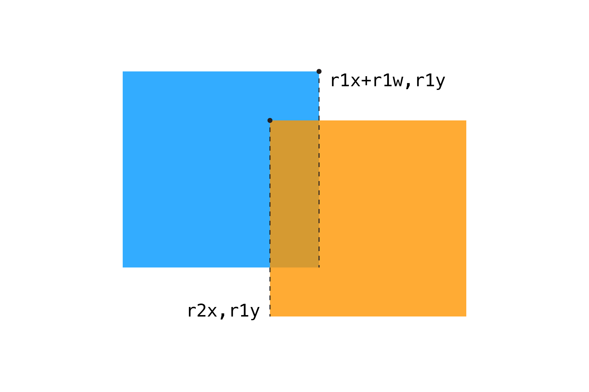
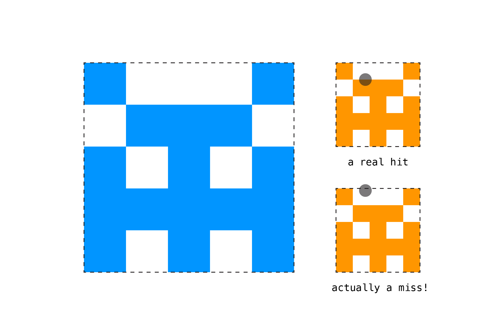

Перехід від перевірки точки з прямокутником до зіткнення двох прямокутників спирається на ту саму ідею порівняння країв. У розробці ігор цей класичний алгоритм має навіть власну назву — AABB (Axis-Aligned Bounding Box, тобто обмежувальна рамка, вирівняна за осями координат).
Нехай у нас є два прямокутники (r1 та r2): перший із параметрами (r1x, r1y, r1w, r1h) та другий із параметрами (r2x, r2y, r2w, r2h). Щоб вони перетиналися, мають одночасно виконуватися чотири умови:
1. Чи ПРАВИЙ край r1 розташований ПРАВОРУЧ від ЛІВОГО краю r2?
2. Чи ЛІВИЙ край r1 розташований ЛІВОРУЧ від ПРАВОГО краю r2?
3. Чи НИЖНІЙ край r1 розташований НИЖЧЕ від ВЕРХНЬОГО краю r2?
4. Чи ВЕРХНІЙ край r1 розташований ВИЩЕ від НИЖНЬОГО краю r2?Зізнаймося чесно: з першого прочитання ці чотири рядки можуть заплутати будь-кого! Щоб відчути їх на дотик, спробуйте взяти дві візитівки, книжки або два вирізані з паперу прямокутники й порухати їх один відносно одного на столі. Або намалюйте їх на аркуші. Уже за пару хвилин пазл складеться! Нижче ми також розберемо другий, ще інтуїтивніший спосіб міркування «від супротивного», а поки погляньмо на ілюстрацію:

Як ми вже знаємо з попереднього розділу, правий край першого прямокутника має координату r1x + r1w, а лівий край другого — r2x. Тож перша умова записується так:
const r1RightEdge = r1x + r1w;
if (r1RightEdge >= r2x) {
// правий край r1 зайшов за лівий край r2
}Додавши перевірки для решти трьох сторін, отримуємо повну умову перетину:
if (
r1x + r1w >= r2x && // правий край r1 праворуч від лівого краю r2
r1x <= r2x + r2w && // лівий край r1 ліворуч від правого краю r2
r1y + r1h >= r2y && // нижній край r1 нижче від верхнього краю r2
r1y <= r2y + r2h // верхній край r1 вище від нижнього краю r2
) {
return true;
}
return false;Якщо попередня умова все ще здається складною для запам’ятовування, спробуймо поставити запитання інакше: коли два прямокутники точно не торкаються один одного?
Уявіть ті самі два прямокутники на столі. Очевидно, що між ними є проміжок і вони не перетинаються лише в чотирьох простих випадках:
1. Лівий край першого прямокутника знаходиться за правим краєм другого.
2. Правий край першого прямокутника знаходиться перед лівим краєм другого.
3. Верхній край першого прямокутника знаходиться нижче від нижнього краю другого.
4. Нижній край першого прямокутника знаходиться вище від верхнього краю другого.Якщо справджується хоча б одна з цих чотирьох умов (використовуємо оператор логічного «АБО» — ||), прямокутники точно не стикаються, і ми повертаємо false. А якщо жодна з них не виконалась — прямокутникам просто нікуди подітися, окрім як перетинатися, тож повертаємо true! Код дуже схожий на попередній, але такі умови іноді легше пригадати та пояснити.
if (
r1x > r2x + r2w || // r1 повністю праворуч від r2
r1x + r1w < r2x || // r1 повністю ліворуч від r2
r1y > r2y + r2h || // r1 повністю нижче від r2
r1y + r1h < r2y // r1 повністю вище від r2
) {
return false;
}
return true;Хоча математика для цього прикладу базується на простому додаванні та порівнянні, це один із непростих випадків для інтуїтивного сприйняття. Попрактикувавшись, ви зможете легко уявляти це. А створена нами функція значно спростить перевірку зіткнень! І пам'ятайте, що замальовки на аркуші паперу можуть суттєво допомогти вам під час написання коду.
Отже обидві функції математично рівносильні, тож ви можете користуватися тією, яка вам ближча і зрозуміліша! Ось повний код прикладу:
// координати та розміри першого (рухомого) прямокутника
let r1x = 0;
let r1y = 0;
const r1w = 30;
const r1h = 30;
// координати та розміри другого (статичного) прямокутника
let r2x;
let r2y;
const r2w = 200;
const r2h = 200;
function setup() {
createCanvas(window.innerWidth, window.innerHeight);
noStroke();
// розміщуємо статичний прямокутник по центру полотна
r2x = (width - r2w) / 2;
r2y = (height - r2h) / 2;
}
function draw() {
background(255);
// оновлюємо положення рухомого прямокутника координатами курсора
r1x = mouseX;
r1y = mouseY;
// перевіряємо, чи перетинаються два прямокутники
const isColliding = collideRectRect(r1x, r1y, r1w, r1h, r2x, r2y, r2w, r2h);
// змінюємо колір центрального прямокутника при зіткненні
if (isColliding) {
fill(255, 150, 0);
} else {
fill(0, 150, 255);
}
// малюємо статичний прямокутник
rect(r2x, r2y, r2w, r2h);
// малюємо рухомий прямокутник
fill(0, 150);
rect(r1x, r1y, r1w, r1h);
}
// перевірка на зіткнення між двома прямокутниками
function collideRectRect(r1x, r1y, r1w, r1h, r2x, r2y, r2w, r2h) {
// чи перекриваються проєкції прямокутників за осями x та y?
if (
r1x + r1w >= r2x && // правий край r1 праворуч від лівого краю r2
r1x <= r2x + r2w && // лівий край r1 ліворуч від правого краю r2
r1y + r1h >= r2y && // нижній край r1 нижче від верхнього краю r2
r1y <= r2y + r2h // верхній край r1 вище від нижнього краю r2
) {
return true;
}
return false;
}
// альтернативний запис через перевірку відсутності перетину
function collideRectRectIntuitive(r1x, r1y, r1w, r1h, r2x, r2y, r2w, r2h) {
if (
r1x > r2x + r2w || // r1 повністю праворуч від r2
r1x + r1w < r2x || // r1 повністю ліворуч від r2
r1y > r2y + r2h || // r1 повністю нижче від r2
r1y + r1h < r2y // r1 повністю вище від r2
) {
return false;
}
return true;
}Зверніть увагу на два важливі моменти. По-перше, хоча на сцені намальовано квадрати, функція однаково добре працює з прямокутниками будь-яких пропорцій. По-друге, алгоритм розрахований на стандартний режим rectMode(CORNER), де координати (x, y) задають лівий верхній кут. Якщо у вашому проєкті використовується малювання від центра rectMode(CENTER), формулу легко адаптувати — ми запропонуємо це зробити в розділі «Завдання 2».

Як і обмежувальні кола, зіткнення прямокутника з прямокутником постійно використовують для створення невидимих «обмежувальних рамок» або хітбоксів (bounding boxes / hitboxes) навколо персонажів і спрайтів. Перевірка чотирьох нерівностей не потребує навіть квадратного кореня, тому комп’ютер може виконувати мільйони таких перевірок за секунду!
Звісно, за високу швидкодію доводиться платити точністю. Якщо ви колись грали у відеогру й обурено вигукували: «Та це ж промах, снаряд пролетів повз плече!», — ви зіткнулися саме з прямокутним хітбоксом, кути якого виступали за межі намальованого персонажа. Пошук балансу між математичною точністю, швидкодією та відчуттям справедливості у гравця — одне з найцікавіших завдань геймдизайну.
Далі: Круг і Прямокутник